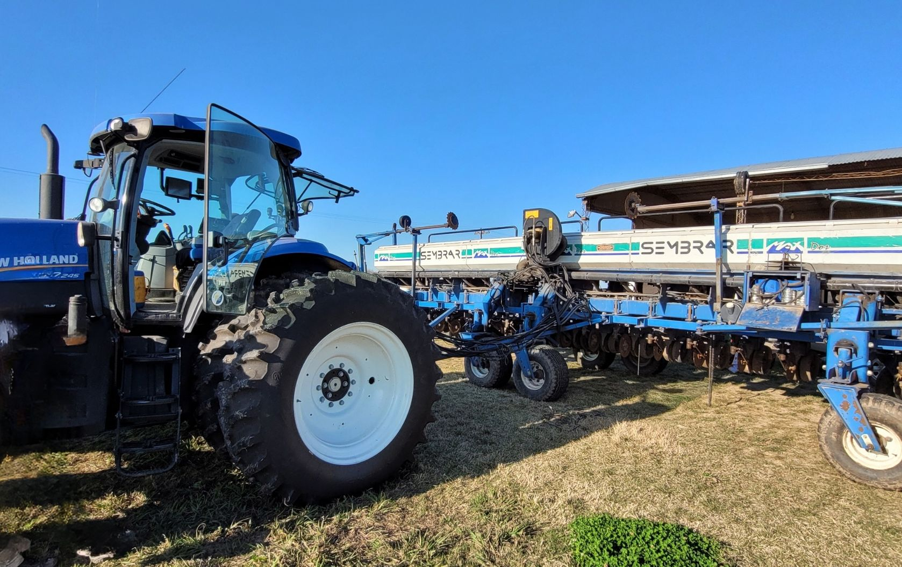

Acesoramiento
Más de 10 años de experiencia en el rubro
Instalación
Personal altamente capacitado
Servicio
Estamos presentes en todo momento
¿Qué es la agrotecnología?
La Agrotecnología aplica los avances científicos y tecnológicos en la agricultura para mejorar la productividad, la eficiencia y la sostenibilidad del sector agrícola. La Agrotecnología se enfoca en el desarrollo de soluciones innovadoras para resolver los desafíos que enfrenta la agricultura moderna.
El objetivo principal de la Agrotecnología es mejorar la eficiencia y la rentabilidad de la producción agrícola a través de instrumentos que facilitan, optimizan y aceleran los procesos de producción.

Principales tecnologías utilizadas en el agro:
Monitor de siembra
El monitor de siembra es un sistema electrónico que permite controlar, en tiempo real, la dosificación de semillas que deposita la sembradora. Esto resulta posible gracias a los sensores instalados en la maquinaria.
Banderillero satelital
Orientación por barra de luces para que el operador se mantenga siempre en la línea correcta.
Corte por sección para siembra
Evita solapamiento en siembra y fertilización. Economiza cantidad de semillas y fertilizantes por hectáreas. Favorece el buen desarrollo de las plantas, ya que al no encimarse, no hay competencia entre sí.
Piloto automático
Es un sistema de guiado por la tecnología que dirige a la máquina automáticamente por el campo. El sistema de piloto automático, desarrollado para mejorar el rendimiento y la precisión de operación, ayuda a la navegación y se puede integrar completamente con otras funciones de los equipos de agricultura de precisión.
Control de pulverización
Control automatizado de la pulverización para minimizar la superposición de los recursos de productos líquidos o evitar el exceso de aplicación.